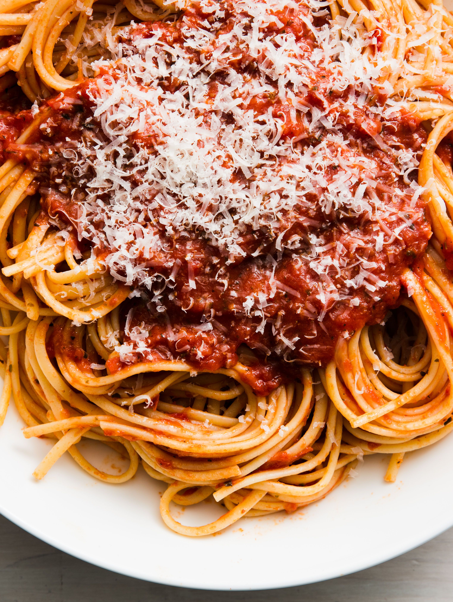

Spaghetti

Description
An Italian classic at home.
Ingredients
- 1 box of spaghetti
- 1 lb of ground beef
- 1 jar of tomato sauce
- Parmesan cheese to finish
- Italian seasonings
- Salt and pepper to taste
Steps
- Heat a large pot of water on high until rolling boil.
- Cook ground beef on medium heat until well browned, drain some of the fat and add the jar of sauce. Salt and pepper to taste.
- Boil the pasta once the water is boiling. Drain the pasta when they are al dente as instructed on the package.
- Either combine the sauce and pasta in the large pot or serve separately.
- Plate with parmesan of choice.